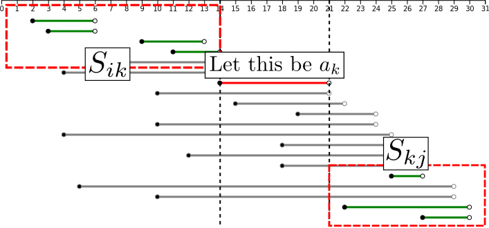

Greedy Algorithm Contents Greedy Method Many Problems Greedy Idea Greedy Algorithm Making the locally optimal choice at each stage with the intent of finding a global optimum ("Greedy Algorithm", Wikipedia) Advantage Often easy to implement Often efficient on time complexity Disadvantage Often the wrong way. Even if it is correct method, often difficult to prove validness. Famous Problems Solution of greedy problems depends on each problems. Example: Coin Changing Problem (Special Case) Interval Scheduling Coin-making Problem (Special Case) Japanese: (Coin Changing Problem) This problem may not be useful in competitive programming because of narrowness of application. Problem Statement There are coins: 1yen, 5yen, and 10yen. Minimize the number of coin used to pay KKK yen. Solution: Choose maximum yen greedly. Choose 10yen as many as possible: N/10N/10N/10 coins. Remainder is N=N%10N' = N\%10N=N%10. Choose 5yen as many as possible: N/5N'/5N/5 coins. Remainder is N=N%5N'' = N'\%5N=N%5. Choose 1yen as many as possible: N/1N''/1N/1 coins. Remainder should be 000. The answer is (N/10+N/5+N/1)(N/10 + N'/5 + N''/1)(N/10+N/5+N/1). Condition to solve by Greedy You don't have to remember this condition. Here, iii-th coin is cic_ici, and coins are sorted in ascending order, and H(x)H(x)H(x) is defined this: H(x)=minimumnumberofcoinsusedtopayxyenH(x) = \text{minimum number of coins used to pay $x$ yen} H(x)=minimumnumberofcoinsusedtopayxyenThen, this is true, we can solve this problem by Greedy: j(1jN1),H(j)<pj1(Thereisauniquepj,jsuchthatcj+1=pjcjj)\begin{aligned} & \forall j (1 \le j \le N - 1),\ H(\delta_j)\lt p_j-1 \\ & (\text{There is a unique $p_j$, $\delta_j$ such that } c_{j+1}=p_jc_j-\delta_j) \end{aligned} j(1jN1),H(j)<pj1(Thereisauniquepj,jsuchthatcj+1=pjcjj)This problem is a specialization of Unbounded Knapsack Problem (I don't check the proof...) // vc: list of coins, K: coins to pay int coin_making(vector<int>& vc, int K) { sort(vc.begin(), vc.end(), greater<int>()); int ret = 0; for (auto& c : cv) { ret += K / c; K %= c; } return ret; } General Coin-making Problem cannot be solved by Geedy. can often be solved by DP. Interval Scheduling Problem Statement: There are NNN tasks. iii-th tasks run from sis_isi to tit_iti. Task-iii and task-jjj is disjoint if two are not overlap as time interval. Maximize the size of disjoint set of tasks. N=5(si,ti)=(1,3),(2,5),(4,7),(6,9),(8,10)\begin{aligned} & N = 5\\ & (s_i, t_i) = (1, 3), (2, 5), (4, 7), (6, 9), (8, 10) \end{aligned} N=5(si,ti)=(1,3),(2,5),(4,7),(6,9),(8,10) N=5(si,ti)=(1,3),(2,5),(4,7),(6,9),(8,10)ans=3\begin{aligned} & N = 5\\ & (s_i, t_i) = (1, 3), (2, 5), (4, 7), (6, 9), (8, 10) \\ &\text{ans} = 3 \end{aligned} N=5(si,ti)=(1,3),(2,5),(4,7),(6,9),(8,10)ans=3 Intuition If you choose the tasks which has earlier finishing time, tasks you can choose will increase after the step. In fact, this idea is true. Appendix of this slide describes this proof. int interval_scheduling(int N, vector<int>& s, vector<int>& t) { vector<pair<int, int>> itv; for (int i = 0; i < N; i++) { itv.push_back(make_pair(t[i], s[i])); // Note the order: not (s[i], t[i])! } sort(itv.begin(), itv.end()); // t: finished time chosen last int ans = 0, t = 0; for (int i = 0; i < N; i++) { if (t <= itv[i].second) { ans++; t = itv[i].first; } } return ans; } Addition: Meaning of ... if (t < itv[i].second) { ans++; t = itv[i].first; } ... Greedy Idea Idea: Problems about lexical order Idea: Problems about "Choose 'strict' things for each step" Idea: when you think validness of greedy: "Replacement of 'usual thing' for 'optical thing' doesn't get things worse" - said by drken: More detail describes Appendix of this slide. Idea: Problems about lexical order Problems asked a lexicographiclly minimum string is often the idea of greedy: you choose as lexicographiclly little character as possible. Idea: Problems about "Choose 'strict' things for each step" Example: for each step, choose as a small/little thing as possible choose as a big/large thing as possible choose as a near thing as possible choose as a far thing as possible choose as lexicographiclly little character as possible. For that reason, sorting is often good strategy. Proof of validness Some typical problems should be in your mind (e.g. interval scheduling) In a contest, you shouldn't have to prove the validness strictly. You shouldn't spend so much time to prove that the contest is over. But you should think rough proof. If you have an idea of greedy method in a contest whitch is difficult to prove, it is good to try to make counterexample. If you cannot find it, this method may be true. Famous Greedy Algorithm This algorithm choose as a small thing as possible Dijkstra Algorithm (Shortest Path) Prim and Kruskal Algorithm (Minimum Spanning Tree) Ford Fulkerson Algorithm (Maximum Flow) Appendix Proof of validness of greedy method on Interval Scheduling Understanding this proof may not contribute to your growness on competitive programming. But it is interesting. Outline Formal definition of Interval Scheduling Having optimal substructure Includion of the earliest finishing task in the answer. This proof is based on "Introduction to Algorithms (CLRS)." Formal definition of Interval Scheduling Input: Set of intervals: Si={a1,a2,,an}S_i = \{a_1, a_2, \cdots, a_n\}Si={a1,a2,,an} ai:=right-openinterval[si,ti).a_i := \text{right-open interval } [s_i, t_i). ai:=right-openinterval[si,ti).aiandajisdisjointdeffisjfjsia_i \text{ and } a_j \text{ is disjoint } \overset{def}{\Leftrightarrow} f_i \le s_j \lor f_j \le s_i aiandajisdisjointdeffisjfjsiOutput: Maxium size set of mutually disjoint tasks Supplement: aiandajisdisjointdeffisjfjsia_i \text{ and } a_j \text{ is disjoint } \overset{def}{\Leftrightarrow} f_i \le s_j \lor f_j \le s_i aiandajisdisjointdeffisjfjsiIn other words, two intervals are not overlapped. Optimal substructure of the Interval Scheduling What is optimal substructure ? In computer science, a problem is said to have optimal substructure if an optimal solution can be constructed from optimal solutions of its subproblems. ("Optimal substructure", Wikipedia) Example: Knapsack Problem Optimal substructure of the Interval Scheduling Sij:={anfisnfn<sj}Aij:=theanswerofIntervalSchedulingforSijthenifakAij,Aik:=AijSikAkj:=AijSkjAij=Aik{ak}AkjAij=Aik+1+AkjInotherwords,AijconsistsinAikandAkj.\begin{aligned} &\hspace{4em} S_{ij} := \{a_n \mid f_i \le s_n \land f_n \lt s_j\}\\ &\hspace{4em} A_{ij} := \text{the answer of Interval Scheduling for } S_{ij}\\ &\text{then if } a_k \in A_{ij},\\ &\hspace{4em}A_{ik} := A_{ij} \cap S_{ik}\\ &\hspace{4em}A_{kj} := A_{ij} \cap S_{kj}\\ &\hspace{4em}A_{ij} = A_{ik} \cup \{a_k\} \cup A_{kj}\\ &\hspace{4em}\therefore |A_{ij}| = |A_{ik}| + 1 + |A_{kj}|\\ &\text{In other words, } A_{ij} \text{ consists in } A_{ik} \text{ and } A_{kj}. \end{aligned} Sij:={anfisnfn<sj}Aij:=theanswerofIntervalSchedulingforSijthenifakAij,Aik:=AijSikAkj:=AijSkjAij=Aik{ak}AkjAij=Aik+1+AkjInotherwords,AijconsistsinAikandAkj.  Lem1.AikistheanswerofIntervalSchedulingforSikProof:Aik:=AijSikAikSikIfwecouldfindAiksuchthatAik,SikAik>AikNotethatAikAkj=,thenAik+1+Akj>Aik+1+Akj=AijThatcntradictstheassumutionthatAijisanoptimalsolutions.\begin{aligned} &\text{Lem1. } A_{ik} \text{ is the answer of Interval Scheduling for } S_{ik}\\ &\text{Proof: }\\ &\hspace{4em}A_{ik} := A_{ij} \cap S_{ik} \Rightarrow A_{ik} \subset S_{ik}\\ &\text{If we could find } A^\prime_{ik} \text{ such that } A^\prime_{ik},\subset S_{ik} \land |A^\prime_{ik}|\gt |A_{ik}|\\ &\text{Note that } A^\prime_{ik} \cap A_{kj} = \emptyset \text{ , then}\\ &\hspace{4em} |A^\prime_{ik}| + 1 + |A_{kj}| \gt |A_{ik}| + 1 + |A_{kj}| = |A_{ij}|\\ &\text{That cntradicts the assumution that } A_{ij} \text{ is an optimal solutions. } \end{aligned} Lem1.AikistheanswerofIntervalSchedulingforSikProof:Aik:=AijSikAikSikIfwecouldfindAiksuchthatAik,SikAik>AikNotethatAikAkj=,thenAik+1+Akj>Aik+1+Akj=AijThatcntradictstheassumutionthatAijisanoptimalsolutions.We can also prove in the same way that AkjA_{kj}Akj is the answer of Interval Scheduling for SkjS_{kj}Skj. Includion of the earliest finishing task in the answer. Lem2.Sk:=noemptysubproblemsam:=anactivityinSkwiththeearliestfinishtimeAk:=theanswerofIntervalSchedulingforSkthen,amAk.\begin{aligned} &\text{Lem2. }\\ &\hspace{4em}S_k := \text{no empty subproblems}\\ &\hspace{4em}a_m := \text{an activity in } S_k \text{ with the earliest finish time}\\ &\hspace{4em}A_k := \text{the answer of Interval Scheduling for } S_k\\ &\text{then, } a_m \in A_k.\\ \end{aligned} Lem2.Sk:=noemptysubproblemsam:=anactivityinSkwiththeearliestfinishtimeAk:=theanswerofIntervalSchedulingforSkthen,amAk. Proof:LetajbetheactivityinAkwiththeearliestfinishtime.Ifaj=am,wearedone.Ifajam,letajbereplacedtoam:Ak=Ak{aj}{am}ThetasksinAkaredisjoint.Akisdisjoint,Thedefinitionofaj,fmfj.Ak=Ak,sowesubstituteAkforAk.Inconclusion,amAk.\begin{aligned} &\text{Proof: Let } a_j \text{ be the activity in } A_k \text{ with the earliest finish time. }\\ &\hspace{2em}\text{If } a_j = a_m \text{ , we are done. }\\ &\hspace{2em}\text{If } a_j \neq a_m \text{ , let } a_j \text{ be replaced to } a_m:\\ &\hspace{4em} A^\prime_k = A_k-\{a_j\}\cup\{a_m\}\\ &\hspace{2em} \text{The tasks in } A^\prime_k \text{ are disjoint. }\\ &\hspace{4em} \because A_k \text{ is disjoint},\\ &\hspace{5em} \text{The definition of } a_j,\\ &\hspace{5em} f_m \le f_j.\\ &\hspace{2em} |A^\prime_k| = |A_k| \text{, so we substitute } A^\prime_k \text{ for } A_k.\\ &\text{In conclusion, } a_m \in A_k. \end{aligned} Proof:LetajbetheactivityinAkwiththeearliestfinishtime.Ifaj=am,wearedone.Ifaj=am,letajbereplacedtoam:Ak=Ak{aj}{am}ThetasksinAkaredisjoint.Akisdisjoint,Thedefinitionofaj,fmfj.Ak=Ak,sowesubstituteAkforAk.Inconclusion,amAk. Note Idea: "Replacement of 'usual thing' for 'optical thing' doesn't things worse" is said by drken: Ref: AtCoder () Ref: AtCoder AGC 029 B - Powers of two (600 ) Excercise AGC001A - BBQ Easy ABC076C - Dubious Document 2 ABC103D - Islands War Answer AGC001A You should choose two minimum numbers from {L1,L2,,L2N}\{L_1, L_2, \cdots, L_{2N}\}{L1,L2,,L2N} and make pair. Because minimum number has an effect on score. In sammary, let's sort {Li}\{L_i\}{Li} and make pair in asceding order. #include <iostream> #include <vector> #include <algorithm> using namespace std; int main() { int N; cin >> N; vector<int> L(2*N); for (int i = 0; i < 2*N; i++) cin >> L[i]; sort(L.begin(), L.end()); int ans = 0; for (int i = 0; i < 2*N; i += 2) { ans += L[i]; } cout << ans << endl; return 0; } ABC076C You want to place 'a' at as much left as possible. Searching substring TTT in SSS from back to front. Making small function makes your implement easy. If you want to search from back, reverse makes your implement easy. #include <iostream> #include <algorithm> #include <string> using namespace std; bool check(string& S, string& T, int idx) { for (int i = 0; i < T.size(); i++) { if (i + idx >= S.size()) return false; if (S[i + idx] != T[i] && S[i + idx] != '?') return false; } return true; } int main() { string S, T; cin >> S >> T; reverse(S.begin(), S.end()); reverse(T.begin(), T.end()); for (int i = 0; i < S.size(); i++) { if (check(S, T, i)) { for (int j = 0; j < T.size(); j++) { S[i + j] = T[j]; } for (int i = 0; i < S.size(); i++) { if (S[i] == '?') S[i] = 'a'; } reverse(S.begin(), S.end()); cout << S << endl; return 0; } } cout << "UNRESTORABLE" << endl; return 0; } ABC103D Reduction to Interval Scheduling It is no use choosing two intervals which are mutually overlapped. If you remove one interval, another interval need not be removed. So, you only choose mutually disjoint intervals. If a interval is not overlapped of all other intervals, it should be chosen. It looks Interval Scheduling... Here, the intervals are sored in the accending order on bib_ibi. Let AAA be an answer of Interval Scheduling. If an element in AAA is removed, a request told in problem statement is not satisfied. If an element not in AAA is added, it is overlapped to some intervals in AAA. If a interval is (ai,bi)(a_i, b_i)(ai,bi), you only remove the bridge which links (bi1)(b_i-1)(bi1) to bib_ibi. So, A|A|A is problem's answer. Example: Dotted line shows positions of removing bridge. #include <iostream> #include <vector> #include <algorithm> using namespace std; int interval_scheduling(int N, vector<int>& vs, vector<int>& vt) { vector<pair<int, int>> itv; for (int i = 0; i < N; i++) { itv.push_back(make_pair(vt[i], vs[i])); } sort(itv.begin(), itv.end()); int ans = 0, t = 0; for (int i = 0; i < N; i++) { if (t <= itv[i].second) { ans++; t = itv[i].first; } } return ans; } int main() { int N, M; cin >> N >> M; vector<int> s(M), t(M); for (int i = 0; i < M; i++) cin >> s[i] >> t[i]; cout << interval_scheduling(M, s, t) << endl; return 0; }